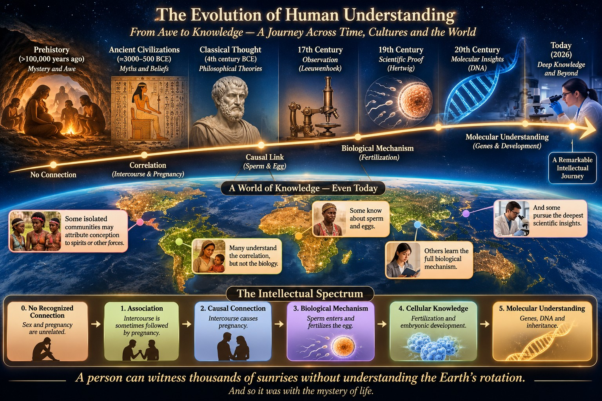

Every day, somewhere in the world, a child is born. The connection between sex, pregnancy and birth can seem so self-evident that it is tempting to imagine that every human being, in every era, must always have understood it. But observing a sequence is not the same as understanding the process that connects its events.

Seeing something happen repeatedly does not automatically reveal why it happens.
The sunrise is visible. Earth's rotation is an explanation. The two are not the same kind of knowledge.
Observation is not explanation
Imagine a community in which people have watched births for generations. They know that pregnancy precedes childbirth. They see couples having sex, women becoming pregnant, and babies arriving months later. They may notice that pregnancies are more common among sexually active women. Yet what, exactly, do they conclude from those observations?
They might understand that intercourse is associated with pregnancy without understanding that sperm from a man and an egg from a woman unite to begin embryonic development. They might recognize a practical connection while explaining conception through spirits, ancestors, divine intervention, or another framework that makes sense within their world.
There are several different kinds of knowledge here: noticing a pattern; believing one event contributes to another; identifying the physical mechanism; and understanding the cellular process. These are not identical achievements.
One famous anthropological debate
In the early twentieth century, anthropologist Bronisław Malinowski wrote about conception beliefs among the Trobriand Islanders of the western Pacific. His accounts became famous because he argued that Islanders did not understand physiological paternity in the same way Europeans did. In the account he presented, ancestral spirits were central to conception, while intercourse had a different social and bodily significance.
But this story should not be repeated as a simple claim that an entire people had never noticed any relationship between sex and pregnancy. Malinowski's own later reflections were more qualified: he described an incomplete or differently organized understanding, not a clean division between total knowledge and total ignorance. Later anthropologists have also challenged how he interpreted what people told him, and what his categories of “knowledge” and “ignorance” assumed.
A necessary caution
Ethnographic accounts are interpretations, shaped by language, questioning, translation and the observer's assumptions. A community's explanation of conception may not map neatly onto a yes-or-no question about whether its members “know the facts.” The Trobriand case is evidence of a debate about cultural understandings—not proof that a whole population was unaware that sex and pregnancy were connected.
There was no single global moment of discovery
Human communities did not all travel along one shared intellectual timeline. Knowledge could develop locally, be passed down orally, be expressed through ritual, or coexist with spiritual explanations. Groups separated by geography and history could arrive at different accounts of reproduction. Even within one community, practical knowledge, ritual belief and individual understanding need not be identical.
A conceptual picture of knowledge across human communities
This is an illustrative, non-geographic diagram. Dots do not identify actual peoples or historical locations; the connecting paths represent the possibility of independent and uneven knowledge development.
What the scientific record tells us
Written scientific history is not the same as the first time any human understood reproduction. Long before laboratories, people who raised animals, cultivated plants and observed pregnancy had practical reasons to notice patterns. The exact date when the intercourse–pregnancy connection was first recognized is unknowable. It almost certainly predates written records, but we cannot responsibly assign it a precise prehistoric date.
What we can trace is the much later development of formal explanations—especially the microscopic account of how sperm and egg contribute to a new organism.
Competing theories of generation
Hippocratic writers proposed that both male and female contributed material to conception. Aristotle developed a different account in which the male principle played the formative role and the female supplied the material. These were philosophical and observational theories, not modern cell biology.
William Harvey and “ex ovo omnia”
In De Generatione Animalium, Harvey argued for the centrality of the egg in generation. His work helped shift inquiry toward observation and dissection, though the mechanisms remained obscure.
Leeuwenhoek observes sperm cells
Using microscopes, Antonie van Leeuwenhoek reported seeing spermatozoa in human semen. Seeing sperm was a major discovery, but scientists still disagreed about what sperm did and how it related to the egg.
Von Baer identifies the mammalian egg
Karl Ernst von Baer identified the mammalian ovum, giving embryology a clearer view of the female reproductive cell.
Fertilization becomes a cellular process
Work by Oscar Hertwig and others established that fertilization involves the union of sperm and egg nuclei. This brought the explanation much closer to the cellular account taught today.
Genetics and molecular biology deepen the picture
Chromosomes, genes and DNA clarified how hereditary information is contributed by both parents. The broad causal connection was now explained at levels invisible to unaided observation.
And what about other animals?
Many animals show mating behaviours and reproductive patterns that make the connection between sex and offspring biologically consequential. But we should be cautious about translating animal behaviour into human-like concepts. An animal can respond to fertility cues, seek mates at particular times, or learn from experience without possessing an abstract theory of fertilization.
In the same way, humans can possess useful practical knowledge without having a correct microscopic explanation. Knowing that something tends to happen is different from knowing how it happens.
The larger point
It is easy, from the comfort of modern biology, to project our present understanding backward onto every human who ever lived. But knowledge is built: through repeated observation, comparison, argument, tools, mistakes and the exchange of ideas. Some insights may be ancient and widespread; others require concepts and instruments that took centuries to develop.
The history of reproduction reminds us that a phenomenon can be visible for millennia while its underlying mechanism remains uncertain. The first human who understood the connection between intercourse and pregnancy is lost to history. We should leave that uncertainty intact rather than invent a date or claim that one isolated society represents humanity's past.
A person can witness thousands of sunrises without understanding the Earth's rotation.
And people can witness generations of births while holding very different ideas about the hidden processes that bring new life into the world.
References & further reading
- Malinowski, Bronisław. Baloma: The Spirits of the Dead in the Trobriand Islands (1916). An early account of Trobriand beliefs about spirits, conception and social life. JSTOR search.
- Malinowski, Bronisław. The Sexual Life of Savages in North-Western Melanesia (1929), especially the discussion of procreation and pregnancy. Google Books.
- Lepani, Katherine. “Virgin Birth.” The International Encyclopedia of Anthropology (2018). A concise account of the anthropological debate and its later criticism. https://doi.org/10.1002/9781118924396.wbiea2226.
- Mosko, Mark S. “Malinowski magical puzzles: Towards a new theory of magic and procreation in Trobriand society.” HAU: Journal of Ethnographic Theory 4(1), 2014. https://doi.org/10.14318/hau4.1.001.
- “Re-starting life: Fertilization and the transition from meiosis to mitosis.” A review including a short history of theories of fertilization and Hertwig's work. PMC. Read the article.
- “An Amazing 10 Years: The Discovery of Egg and Sperm in the 17th Century.” Reproduction in Domestic Animals (2012). Historical discussion of Harvey, Leeuwenhoek and the changing theories of generation. https://doi.org/10.1111/j.1439-0531.2012.02105.x.
- “Chip Off the Old Block: Generation, Development, and Ancestral Concepts of Heredity.” A historical review of early modern ideas about generation and heredity. Read the article.
Historical note: The timeline tracks documented scientific milestones, not the first human discovery of the practical relationship between intercourse and pregnancy. That earlier history cannot be dated with confidence.